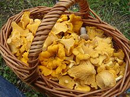

Foraged mushrooms: Chanterelles
Foraged mushrooms:Chanterelles

Description
A golden funnel shaped mushrooms which smells of apricots. Take care not to mix this mushroom up with its poisonous lookalike, the false chanterelle.
- 500g freshly foraged chanterelle mushrooms
- Tablespoon olive oil
- One large onion
- One can butter beans
- Tablespoon tomato puree
- Wash and chop chanterelle mushrooms
- Dice onion and fry in oil until brown
- Add chanterelle mushrooms and tomato puree
- Fry on medium heat until mushrooms are brown
- Stir in butter beans and heat for a further ten minutes